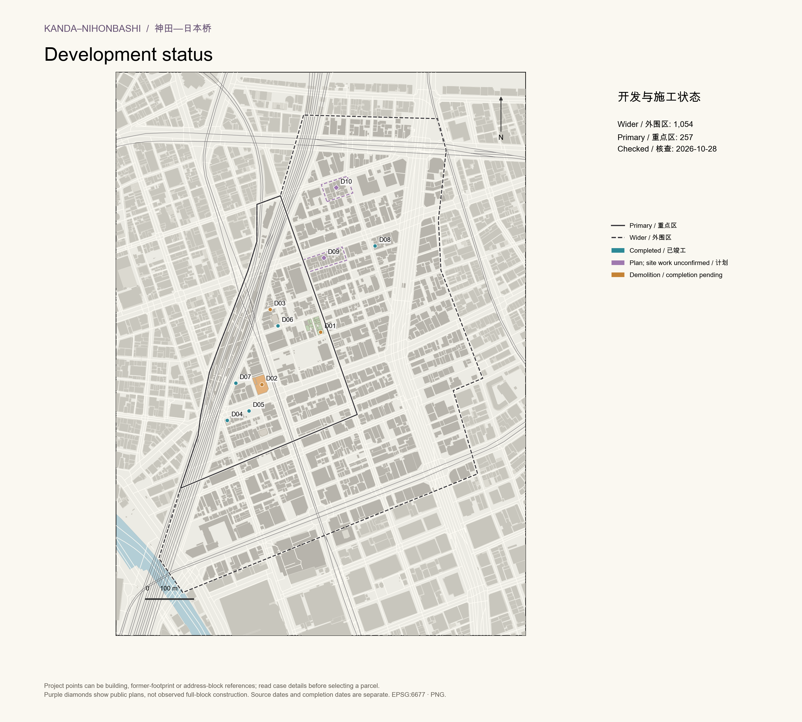

外围区 1054 个建筑模型，重点区 257 个；另保留 10 个沿街背景模型。确认拆除及被新楼替代的旧对象已从现状高度、用途和三维图中移除。
用途调查主要为2021年、模型发布为2025年。核查结合最新下载的OSM、国土地理院轮廓、2026-01-16影像、2026-10-25场地记录及公开项目资料。核查日期不等于每栋楼的现场观测日期。本轮楼龄扩查：外围区267个模型有公开年份，141个为低置信度航拍上限，2个为文献上限，644个仍未知或有冲突。查看逐楼来源与筛选表。

| ID | 项目 | 状态 | 竣工／计划日期 | 空间对应 | 来源 |
|---|---|---|---|---|---|
| D01 | School north — Sumitomo cleared core | 已拆除／围挡空地 | 未知 | Former footprint extents only; not a full parcel, ownership or approved development boundary. | 来源 |
| D02 | Former SMBC bank — demolition site | 拆除／施工地记录 | 未知 | Former baseline footprint extents; OSM construction parcel used for cross-check. | 来源 |
| D03 | SYNCS Kanda — project in block 7 | 新建项目／待竣工 | 2027-02 (end, scheduled) | Only the containing reference block is mapped. The 157.75 m2 project parcel is not delineated. Point is a block representative, not a surveyed building location. | 来源 |
| D04 | D-Scape Kanda — completed 2026 | 近期建成 | 2026-08-18 | Published project map point checked against architect description of Kanda south street junction. New footprint not surveyed. | 来源 |
| D05 | Hilltop Kanda — completed 2024 | 近期建成 | 2024-10-31 | Updated using the current 1-7-6 address and new-building leasing map. Old named OSM footprint does not define the new 450.07 m2 footprint. | 来源 |
| D06 | CIRCLES Kanda — completed 2023 | 近期建成 | 2023-12-15 | GSI exact house-reference point, cross-checked with developer access map; not a new footprint. | 来源 |
| D07 | Kajicho 2-1-4 — completed 2025 | 已竣工／轮廓待核 | 2025-10-01 | Address/block reference; no exact parcel boundary or automatic deletion of neighbouring models. | 来源 |
| D08 | PHOENIX KANDA — completed 2026 | 已竣工／轮廓待核 | 2026-03-02 | Address/block reference; no exact parcel boundary or automatic deletion of neighbouring models. | 来源 |
| D09 | Kanda Tsushin — public plan | 公开计划／现场开工未确认 | 2027-12-10 | Address/block reference; no exact parcel boundary or automatic deletion of neighbouring models. | 来源 |
| D10 | Ark Higashimatsushita — public plan | 公开计划／现场开工未确认 | 2027-09-30 | Address/block reference; no exact parcel boundary or automatic deletion of neighbouring models. | 来源 |
道路约占外围区37.88%，事務所建築物用地约34.54%，鉄道・港湾等约8.24%，集合住宅约3.95%，住商混合约2.48%（原始2021年调查范围内）。住宅并未占据多数；原先将住商混合合并进住宅的图例容易造成误读。
土地利用面包括建筑外的退线、院落等用地，不能当成建筑轮廓。“填缝”不是新增建筑。新版保留细分类与未覆盖小缝隙，仅在已确认变化的原建筑范围更新为空地、拆除地或停车。
建筑 GeoJSON · 建筑 CSV · 项目与来源 · 土地利用核查